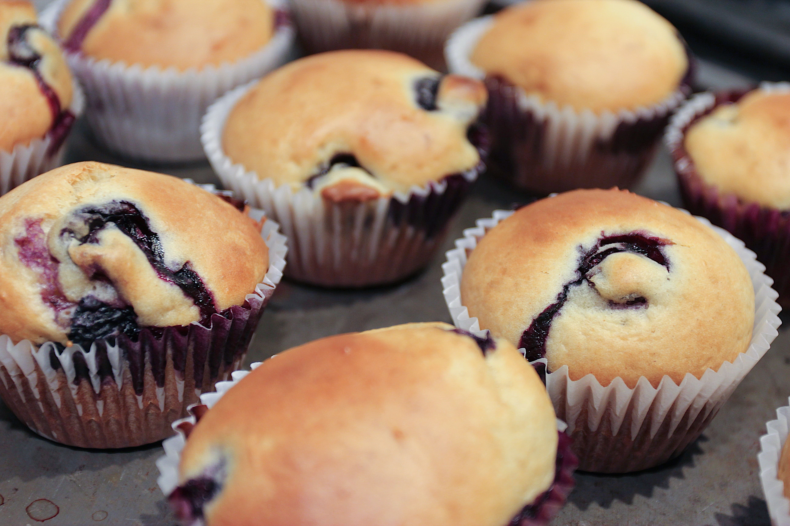
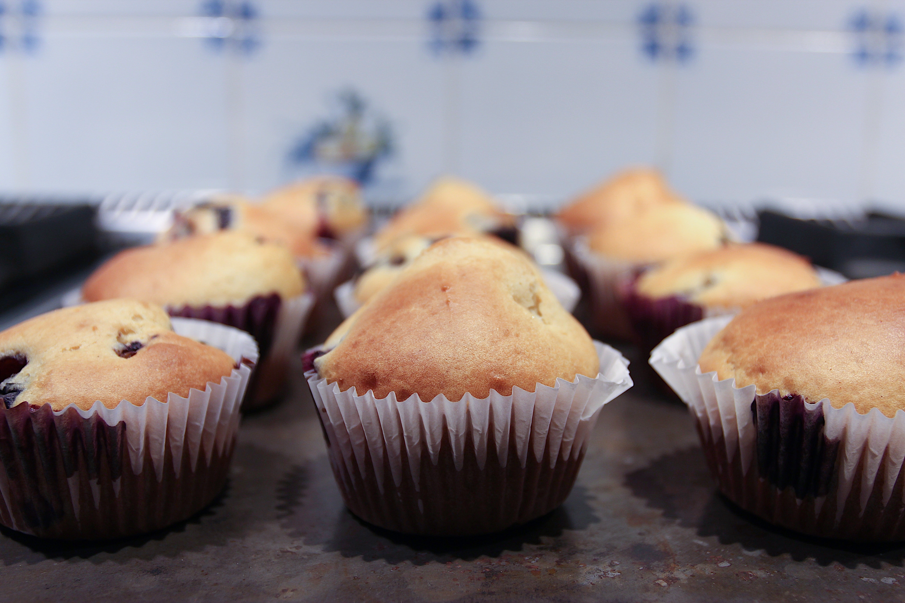

Blueberry Muffins
 Effort: Easy30 mins (Prep), ~20 mins (Bake)
Recipe
Dry ingredients
- 1 ¾ cups all purpose flour
- 1 teaspoon baking powder
- ½ teaspoon baking soda
- ½ teaspoon fine sea salt
- ¼ teaspoon ground cinnamon (optional)
- 1 cup blueberries
Wet ingredients
- ⅓ cup melted coconut oil or extra-virgin olive oil
- ½ cup honey or maple syrup
- 2 eggs
- 1 cup plain Greek yogurt
- 2 teaspoons vanilla extract
Preparation Notes
- Preheat oven to 400 degrees Farenheit.
- Begin by mixing together 2 eggs with baking powder, baking soda, salt, and cinammon in stand mixer (I use the paddle attachment for KitchenAid).
- Add in remaining ingredients. Be careful to add blueberries last, mixing them in briefly at low speed to avoid crushing.
- Grease or use liners in a muffin pan. Scoop batter into pan using medium ice cream scoop or equivalent.
- Bake for 19 minutes (or until toothpick comes out clean).


